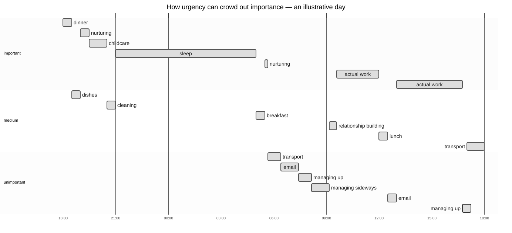

Why this app?
If you're like me, your daily to-do list lives in your head, looking like this:

Read the mindmap as a list
- Chores for house and family: dishes, groceries, laundry, transport, cleaning, childcare, nurturing.
- Work Tasks: email, planning, relationship building, managing up, managing sideways, actual work.
- Personal Projects: gardening, painting, contracting.
- Self Care: sleep, eat, exercise, doctor's orders, Sobriety and Self-Love.
It's not chaotic, really, but it's a little overwhelming. It's not really clear where to start. You might write it down in a task app or a bullet journal, or on a whiteboard, but then you either can't see the whole picture, leave it anchored in one place, or put it down and can't find it later.
More important, you end up doing the wrong work first, and never finding time for the big stones.
Task Sorter is different.
- It's on your phone so you don't lose it.
- When you enter your tasks, Task Sorter walks you through a sorting algorithm so you rank the tasks from most to least important.
- You enter how long the tasks take.
- You tell us how long you have to work.
Then Task Sorter walks you through the tasks, one at a time, and tracks your time to keep you focused.
Tasks that are unimportant but urgent displace tasks that are important, sometimes completely.


Read the chart as a schedule
| Importance | Task | Time |
|---|---|---|
| Important | Dinner | Oct 25, 6–6:30 p.m. |
| Medium | Dishes | 6:30–7 p.m. |
| Important | Nurturing | 7–7:30 p.m. |
| Important | Childcare | 7:30–8:30 p.m. |
| Medium | Cleaning | 8:30–9 p.m. |
| Important | Sleep | 9 p.m.–5 a.m. |
| Medium | Breakfast | Oct 26, 5–5:30 a.m. |
| Important | Nurturing | 5:30–5:40 a.m. |
| Unimportant | Transport | 5:40–6:25 a.m. |
| Unimportant | 6:25–7:25 a.m. | |
| Unimportant | Managing up | 7:25–8:10 a.m. |
| Unimportant | Managing sideways | 8:10–9:10 a.m. |
| Medium | Relationship building | 9:10–9:35 a.m. |
| Important | Actual work | 9:35 a.m.–noon |
| Medium | Lunch | Noon–12:30 p.m. |
| Unimportant | 12:30–1 p.m. | |
| Important | Actual work | 1–4:45 p.m. |
| Unimportant | Managing up | 4:45–5:15 p.m. — conflicts with transport |
| Medium | Transport | 5–6 p.m. |
This illustration uses explicit times to untangle the original circular dependencies. Actual work is split around lunch and email; its time blocks are illustrative. The original fixed appointments and stated durations are retained. This is an example of the problem, not output from Task Sorter's scheduler.
So there are five related ideas to distinguish
Importance ≠ Priority ≠ Start Date ≠ End Date − Duration ≠ Deadline
- Importance is about the impact the task has.
- Priority is about what order the tasks happen in.
- Start Date is about when you actually start the task.
- End Date is when the task is complete. But not all tasks happen in one single burst.
- Deadline is about when the task must be completed, either for compliance or some other reason.
Estimated duration is the amount of work you predict. A task can take several work sessions, so subtracting its estimate from its completion date doesn't tell you when you first started. Reaching the estimate doesn't finish the task; you choose Done.
Task Sorter contains (and will contain) six related tools to coerce unordered tasks into a prioritized list
| Grouping | Sorted | Unsorted | Unordered |
|---|---|---|---|
| Grouped | Projects | Project Planning | Routines |
| Ungrouped | Backlog | Task Sorting (core merge) | Hardstops |
Sorting, Backlog, hardstops, and nested projects are available now. Routines below describe a future tool. Scheduling examples show the idea; forecasts still depend on the tasks, estimates, deadlines, and working time you've recorded.
-
Task Sorting: At the heart of the app is my sorting algorithm. This isn't any fancy computing, and there's nothing artificial about it. We've hard-coded a recipe that helps you rank your tasks from most to least important, using only comparisons between this and that. Instead of an overwhelming list, it's very simple:

One question, two choices, one tap. Relative importance helps determine what to advance when time constraints leave you a choice. Backlog: Anything you don't finish gets automatically saved. Next time you log in, click Resume to get back to your next eligible task.
Compared unfinished work and unsorted pending work stay distinct. Anonymous lists stay in this browser; signing in opens your separate account data and doesn't merge or replace either list.
Hardstops: When you have a hard stop to your work session, like lunch with the boss or just 5 p.m., you record it before you start working. When the hard stop rolls around, Task Sorter saves your progress and sounds an alarm for you to move on.
A hardstop pauses the session without completing the task. Dismissing or snoozing an estimate alarm leaves its timer running. Browsers may silence audio in the background or on a locked phone.
Routines Planned: Some tasks and hardstops repeat, and you don't need to reenter them. If you want, Task Sorter will stop you and remind you to leave work at 3:07 every Tuesday, so you can get your son by 3:50 and your daughter before 4:15 without sitting on your to-do list staring at you all week. And when she's strapped in, tap Done, and Task Sorter will merge reminding you to grab a gallon of milk and some chicken breasts before “Make Dinner” starts at 5:15.
This routines workflow isn't implemented. Weekly working hours and limited task recurrence don't provide this sequence of reminders.
Project Planning: Not every task is a one-off. Task Sorter supports nested tasks so that you can create projects with subprojects and sub-subprojects, all prioritized and ready to pop up when needed.
Compare siblings within each project. Prerequisites enable a task; components make up a project. The planner respects both relationships.
Projects: Your saved projects sit in your sorted backlog right next to your small tasks. So if you check off “check morning email” at 9:15, “Get a coffee and think about Q4 priorities” can slot itself in for an hour before “meeting to plan client meeting planning meeting” starts at 10:30.
That placement needs an estimate, recorded available time, and compatible constraints. A forecast explains conflicts rather than guaranteeing everything will fit.
And all of these different tools sit peacefully in the background, doing their job while you focus on the task at hand.